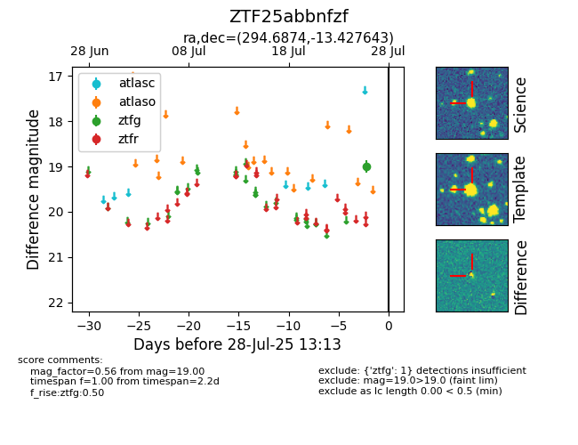

Target ZTF25abbnfzf at 2025-07-28 13:13, see:
FINK: fink-portal.org/ZTF25abbnfzf
Lasair: lasair-ztf.lsst.ac.uk/objects/ZTF25abbnfzf
ALeRCE: alerce.online/object/ZTF25abbnfzf
alt names
ZTF25abbnfzf (ztf,fink)
coordinates:
equatorial (ra, dec) = (294.6874,-13.42764)
galactic (l, b) = (25.9990,-16.45871)
photometry
last ztfg=19.00
1 ztfg detections
